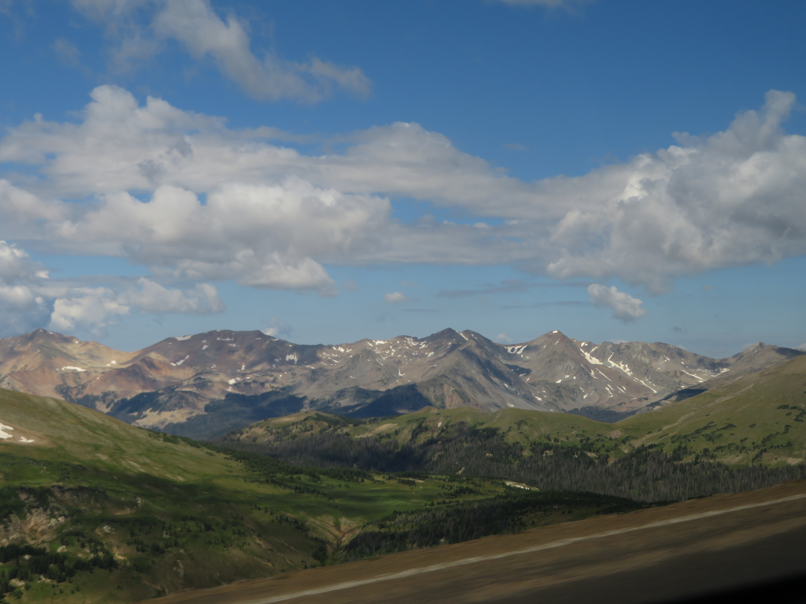
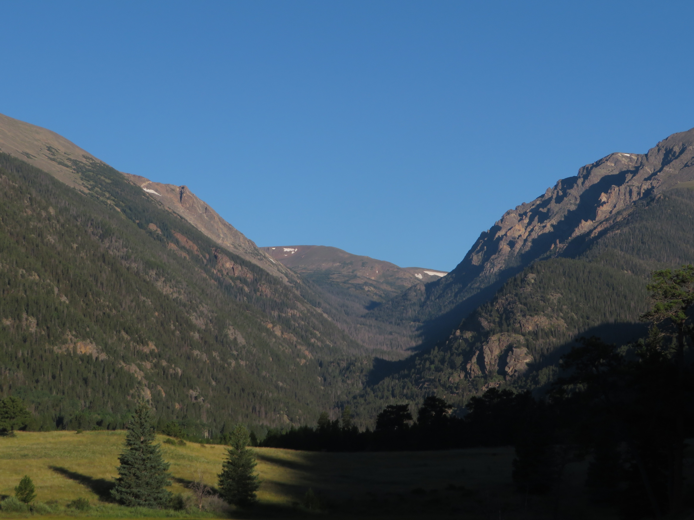
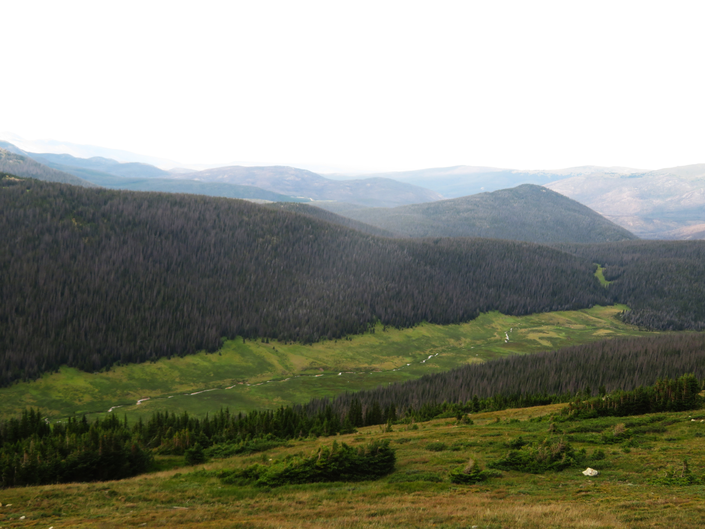

Farview Curve Viewpoint

Tundra Communities Trail
Colorado's Rocky Mountain National Park is very similar to Glacier National Park, containing stunning alpine scenery and plenty of opportunities for wildlife. The park is quite large as well, with plenty to see and do across a multi-day visit.
Farview Curve Viewpoint

Tundra Communities Trail
Trail Ridge Road is the stunning main road connecting the entire park. Being the highest road in the U.S. national park system reaching up to 3713 meters above sea level, the road passes by tons of cool attractions. Starting on the park's east side, the road begins at Sheep Lakes, a picturesque valley full of wildlife, before rising up to the iconic alpine tundra landscape of the Trail Ridge Mountains, and finally going back down towards the emerald green Kawuneeche Valley. With so much incredible scenery, there are plenty of great hikes and viewpoints along this road, including Medicine Bow, Gore Range, and Rainbow Curve Overlooks as well as the Tundra Communities and Forest Canyon trails.

Sheep Lakes Overlook

Trail Ridge Mountains

Kawuneeche Valley View
The other notable part of the park is the Bear Lake area, located on the very East side of the park. This area is home to some of the most beautiful alpine lakes in the entire park. I hiked the Trail to the stunning Emerald Lake, passing by the gorgeous views of both the Bear Lake and Dream Lake on the way. The waterfalls here don't disappoint either, with Alberta Falls being the main one in the area. On both hikes, I was treated with some adorable chipmunks on the trail.

Bear Lake

Dream Lake

Emerald Lake

Alberta Falls

Chipmunk

Chipmunk
The wildlife in Rocky Mountain National Park is just as abundant as its landscapes. My favorite has to be Moose, the largest species of deer in the world. I had so many moose sightings in the park, with 2 highlights on the East side being a massive Bull Moose on the side of the road and another beautiful Bull Moose on the lakeshore in Sheep Lakes. The park's west side is also fantastic to find moose, as I had sightings of 3 Moose on the side of the road in Kawuneeche Valley as well as a Moose on the side of the road in the town of Grand Lake just outside the park. By far my favorite Moose encounter had to be these three Bull Moose I saw right below the Alpine Visitor Center, which was one of the coolest things ever.

Huge Bull Moose, Sheep Lakes

Huge Bull Moose, Sheep Lakes

Lakeshore Moose, Sheep Lakes

3 Moose, Kawuneeche Valley

Moose, Grand Lake Town

2 of 3 Bull Moose, Fall River Valley
Along with moose, so much other wildlife can be found here, including Mule Deer, which I've seen the massive herds in the Eastern part of the park, as well as Elk, the most abundant large mammal here. Visiting in the summer would almost guarantee an elk sighting in the park as they are found basically everywhere, with my highlights occuring in the Alpine regions of the park. Another notable large mammal I saw in the park was a single Bighorn Sheep at Sheep Lakes, which frequently come down here in herds from higher elevations. Small mammals are also extremely common at Rocky Mountain, like the afromentioned Chipmunk, squirrels, pikas, marmots, and rabbits, which are also found everywhere in the park.

Mule Deer, East Entrance

2 Elk, Fall River Valley

Bull Elk, Medicine Bow Curve

Bighorn Sheep, Sheep Lakes

Chipmunk, Emerald Lake

Rabbit, Old Fall River Road